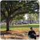

{{ articleinfo.title }}
发布于：{{ articleinfo.get_format_date }}
{% autoescape off %}{{ articleinfo.content }}{% endautoescape %}

阅读 {{ articleinfo.see_num }}
{{ articleinfo.zan_sum }}

一片空白 5.8万
父爱如山，不善表达。回想十多年前，总记得父亲有个宽厚的肩膀，小小的自己跨坐在上面，越过人山人海去看更广阔的天空，那个时候期望自己有一双翅膀，能够像鸟儿一样飞得高，看得远。虽然父亲有时会和自己开玩笑，但在做错事的时候会受到严厉的训斥。父亲有双粗糙的大手掌。
一片空白 5.8万
父爱如山，不善表达。回想十多年前，总记得父亲有个宽厚的肩膀，小小的自己跨坐在上面，越过人山人海去看更广阔的天空，那个时候期望自己有一双翅膀，能够像鸟儿一样飞得高，看得远。虽然父亲有时会和自己开玩笑，但在做错事的时候会受到严厉的训斥。父亲有双粗糙的大手掌。